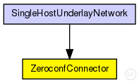
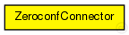

This documentation is released under the Creative Commons license
This documentation is released under the Creative Commons licenseModule for retrieving bootstrap nodes via Zeroconf (AVAHI connector)
Author: Bin Zheng, Ingmar Baumgart
The following diagram shows usage relationships between types. Unresolved types are missing from the diagram. Click here to see the full picture.
The following diagram shows inheritance relationships for this type. Unresolved types are missing from the diagram. Click here to see the full picture.
| SingleHostUnderlayNetwork (network) |
The SingleHostUnderlay ned-file See also: SingleHostUnderlayConfigurator |
| Name | Type | Default value | Description |
|---|---|---|---|
| enableZeroconf | bool |
if true, get bootstrap nodes via Zeroconf |
|
| serviceType | string |
Zeroconf service type |
|
| serviceName | string |
Zeroconf service name |
|
| overlayType | string |
Zeroconf overlay type |
|
| overlayName | string |
Zeroconf overlay name |
| Name | Value | Description |
|---|---|---|
| display | i=block/cogwheel |
// // Module for retrieving bootstrap nodes via Zeroconf (AVAHI connector) // // @author Bin Zheng, Ingmar Baumgart // simple ZeroconfConnector { parameters: bool enableZeroconf; // if true, get bootstrap nodes via Zeroconf string serviceType; // Zeroconf service type string serviceName; // Zeroconf service name string overlayType; // Zeroconf overlay type string overlayName; // Zeroconf overlay name @display("i=block/cogwheel"); }
This documentation is released under the Creative Commons license